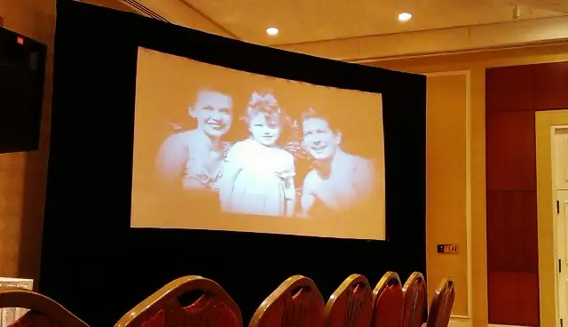

At summer’s beginning I’d listened on Catholic radio to an interview with a remarkable woman known to many as “the nun who kissed Elvis Presley.” From that point on, I’ve been deeply intrigued by the story and soul of Mother Dolores Hart.
Happily, while packing for our summer getaway to Itasca State Park in early June, I discovered an unused Barnes & Noble gift certificate that had slipped through a crack in the trunk of our minivan, just minutes before heading there to find a suitable summertime read. What luck! The $25 book credit, last year’s birthday gift from my husband, was just enough to buy the hardcover of “Ear of the Heart: An Actress’ Journey from Hollywood to Holy Vows.”
{kind=link}
It was in the deep woods of Minnesota that I began my own journey with Dolores Hart. After everyone had gone to bed each night, I would sneak out into the screened-in porch of our cabin, flashlight in hand, engulfed in the story of the beautiful woman who’d bypassed a chance at stardom to dedicate her life to the Lord.
{kind=link}
After we left that location, Dolores Hart came with me, finding her way to many sessions at the pool with the kids, a monastery in rural North Dakota, and other summertime spots where reading opportunities presented themselves. When at last I’d finished the book, its insides were filled with dog-eared pages and hundreds of underlined passages that had grabbed hold and changed me in some way.
One of the first emerged on p. 29, when Mother Dolores was sharing about her colorful and sometimes difficult childhood, which was when she, growing up in a non-Catholic home, found her way into the Church while attending a Catholic school that just happened to be a more convenient location than the public school she would have attended.
She became Catholic not because of any longtime spiritual yearning, but an earthly one. She wanted to join the Catholic kids who, after fasting before receiving the Eucharist in the morning, would enjoy hot chocolate and a sweet treat afterward. But in time, the draw went deeper.
Mother Dolores said it was only as a Catholic that a “sense of joyousness and purpose came over me.” As for those who say she clung to religion because of her tumultuous childhood, she explains it this way: “Some people are quick to say that any child who had no more stability than I would clutch at anything with a sound foundation. That never bothers me because they are only confirming that the Church has strength and solidity.”
As a fellow Catholic who went through her own twists and turns to find herself happily in the arms of Mother Church, I appreciate her insights.
Now, flash forward to last week at a hotel in Somerset, N.J., where I was attending the Catholic Writers Guild conference. I didn’t realize until after I’d registered that one of the event’s main attractions would be none other then Mother Dolores Hart, a guest with Ignatius Press, present as part of the parallel event, the Catholic Marketing Network conference.
When Thursday rolled around, I looked at the schedule with eager anticipation, noting the “Evening with Mother Dolores” that would take place at day’s end, and, as I would later see, end in a triple standing ovation and encore. The crowd could not get enough of this dear soul and her interesting life, a journey of suffering mixed with much sweet solace.
 |
| Trailer of Mother Dolores Hart’s book, “Ear of the Heart” by Ignatius Press |
{kind=link}
But earlier in the day, a once-in-a-life moment floated into my world when Mother and I crossed paths in the halls of the hotel. That encounter led to me pulling out my dog-eared book from my backpack and asking if she’d mind signing it. Not at all, she said, looking for a pen and a chair.
{kind=link}
It also prompted a brief but meaningful conversation with someone whose words and story have endeared her to me; someone I wouldn’t have dared imagine I’d be meeting just a short time after closing her book with such enlightened satifaction.
{kind=link}
That evening, as she presented to the wider audience, she mentioned how someone earlier that day had shared with her an underlined copy of her book, and how much that reminded her of herself when she was younger and had just discovered something of value within the pages of a book.
| Mother Dolores Hart, speaking before a crowd in Somerset, N.J. |
{kind=link}
| Dramatic movements, shown by expressive, graceful hands, always at the ready |
{kind=link}
| Mother shares a lighthearted moment with Ignatius Press’ Anthony Ryan |
{kind=link}
From out in the audience, I beamed, thinking of the way God had blessed me on that trip in ways I could not have anticipated, by the surprise chance to meet one of my newest heroes.
Thank you, Mother Dolores, for sharing your life and light with the rest of us. Your choices, your sacrifices, have not been in vain. We are watching, listening, loving, learning with you.